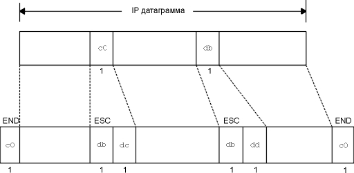

Из рисунка 1.4 видно, что основная задача канального уровня в семействе протоколов TCP/IP - посылать и принимать (1) IP датаграммы для IP модуля, (2) ARP запросы и отклики для ARP модуля, и (3) RARP запросы и отклики для RARP модуля. TCP/IP поддерживает различные канальные уровни, в зависимости от того какой тип сетевого аппаратного обеспечения используется: Ethernet, Token ring, FDDI (Fiber Distributed Data Interface), последовательные линии RS-232, и так далее.
В этой главе мы подробно рассмотрим канальный уровень Ethernet, два специализированных канальных уровня для последовательных интерфейсов (SLIP и PPP) и драйвер loopback, который присутствует практически во всех реализациях. Ethernet и SLIP это канальные уровни, используемые для большинства примеров в данной книге. Также мы рассмотрим максимальный блок передачи (MTU - Maximum Transmission Unit), который является характеристикой канального уровня и к которой мы обращаемся много раз в этой главе и в следующих. Также мы покажем некоторые расчеты, с помощью которых можно выбрать MTU для последовательной линии.
Ethernet и IEEE 802 инкапсуляция
Термин Ethernet обычно означает стандарт, опубликованный в 1982 году компаниями Digital Equipment Corp., Intel Corp., и Xerox Corp. В настоящее время это основная технология применяемая в локальных сетях использующих TCP/IP. В Ethernet используется метод доступа, называемый CSMA/CD, что обозначает наличие несущей (Carrier Sense), множественный доступ (Multiple Access) с определением коллизий (Collision Detection). Обмен осуществляется со скоростью 10 Мбит/сек, с использованием 48-битных адресов.
Несколько лет спустя Комитет 802 Института инженеров по электротехнике и радиоэлектронике (IEEE - Institute of Electrical and Electronics Engineers) опубликовал отличающийся набор стандартов. 802.3 описывает полный набор сетей CSMA/CD, 802.4 описывает сети с передачей маркера и 802.5 описывает сети Token ring. Общим для всех них является стандарт 802.2, который определяет управление логическим каналом (LLC - Logical link control) и который является общим для большинства сетей 802. К сожалению, комбинация 802.2 и 802.3 определяет форматы фрейма отличные от Ethernet ([Stallings 1987] описывает все детали стандартов IEEE 802).
В мире TCP/IP инкапсуляция IP датаграмм определена в RFC 894 [Hornig 1984] для сетей Ethernet и в RFC 1042 [Postel and Reynolds 1988] для сетей IEEE 802. В Host Requirements RFC к каждому компьютеру, подключенному к Internet через кабель Ethernet 10 Мбит/сек, предъявляются следующие требования:
- Компьютер должен иметь возможность посылать и получать пакеты, инкапсулированные с использованием RFC 894 (Ethernet).
- У компьютера должна быть возможность получать пакеты RFC 1042 (IEEE 802), перемешанные с пакетами RFC 894.
- Компьютер должен иметь возможность посылать пакеты с использованием инкапсуляции RFC 1042. Если компьютер может посылать оба типа пакетов, то тип пакета должен быть конфигурируемым, а конфигурация по умолчанию должна быть настроена на пакеты RFC 894.
Наиболее широко используется инкапсуляция RFC 894. На рисунке 2.1 показаны два различных метода инкапсуляции. Цифры под каждым квадратиком на рисунке это размер в байтах.
В обоих форматах фрейма используется 48-битовый (6-байтовый) формат представления адресов источника и назначения (802.3 позволяет использование 16-битных адресов, однако обычно используются 48-битные). Это как раз то, что мы называем по тексту аппаратными адресами (hardware addresses). Протоколы ARP и RARP (см. главу 4 и главу 5) устанавливают соответствие между 32-битными IP адресами и 48-битными аппаратными адресами.
Следующие 2 байта в этих форматах фрейма различаются. Поле длины (length) 802 содержит количество следующих за ним байтов, однако не содержит в конце контрольной суммы. Поле тип (type) в Ethernet определяет тип данных, которые следуют за ним. Во фрейме 802 то же поле типа (type) появляется позже в заголовке протокола доступа к подсети (SNAP - Sub-Network Access Protocol). К счастью, величины, находящиеся в поле длины (length) 802, никогда не совпадают с величинами, находящимися в поле типа (type) Ethernet, поэтому эти два формата фрейма легко различимы.
Во фрейме Ethernet данные следуют сразу после поля тип (type), тогда как во фрейме 802 за ним следуют 3 байта LLC 802.2 и 5 байт SNAP 802.2. Поля DSAP (точка доступа к сервису назначения - Destination Service Access Point) и SSAP (точка доступа к сервису источника - Source Service Access Point) оба установлены в 0xAA. Поле ctrl установлено в 3. Следующие 3 байта, org code установлены в 0. Затем идет 2-байтовое поле тип (type), такое же, как мы видели в формате фрейма Ethernet (дополнительные значения, которые могут появиться в поле типа, описаны в RFC 1340 [Reynolds and Postel 1992]).
Поле контрольной суммы (CRC) определяет ошибки, возникшие при транспортировке фрейма (также оно иногда называется FCS или последовательность контроля фрейма - frame check sequence).
Минимальный размер фреймов 802.3 и Ethernet требует, чтобы размер данных был хотя бы 38 байт для 802.3 или 46 байт для Ethernet. Чтобы удовлетворить этому требованию, иногда вставляются байты заполнения, для того чтобы фрейм был соответствующей длины.
Мы еще столкнемся с минимальным размером, когда будем рассматривать движение пакетов по кабелям. Также мы еще не раз обратимся к инкапсуляции Ethernet, потому что это, пожалуй, самая широко распространенная форма инкапсуляции.
Рисунок 2.1 Инкапсуляция IEEE 802.2/802.3 (RFC 1042) и инкапсуляция Ethernet (RFC 894).
RFC 893 [Leffler and Karels 1984] описывает другую форму инкапсуляции, которая используется в Ethernet и называется инкапсуляция завершителей (trailer encapsulation). С ранними версиями системы BSD на DEC VAX проводился эксперимент, который должен был увеличить производительность путем изменения порядка полей в IP датаграмме. Поля с переменной длиной, которые находились в начале данных фрейма Ethernet (IP заголовок и TCP заголовок), переносились в конец, сразу после контрольной суммы. Это позволяет данным, находящимся во фрейме, быть спланированными в аппаратную страницу с сохранением копии в памяти, когда данные копируются в ядро. Данные TCP, которые кратны 512 байтам, могут быть перемещены путем манипулирования страницами таблиц ядра. Два компьютера договариваются об использовании инкапсуляции завершителей, пользуясь расширением ARP. Для этих фреймов определены различные значения типа фрейма Ethernet.
В настоящее время инкапсуляция завершителей не применяется, поэтому мы не будем приводить примеров. Читатели, которые интересуются этой темой, могут обратиться к RFC 893 или разделу 11.8 [Leffler et al. 1989] за более подробной информацией.
SLIP: IP по последовательной линии
SLIP - это простая форма инкапсуляции IP датаграмм для последовательной линии, которая описана в RFC 1055 [Romkey 1988]. SLIP стал широко использоваться для подключения домашних систем к Internet с того момента, когда практически на каждом компьютере появился последовательный порт RS-232, а также появились высокоскоростные модемы.
Формирование фреймов с использованием SLIP подчиняется следующим правилам.
- IP датаграмма завершается специальным символом, который называется END (0xc0). Для того чтобы предотвратить шум в линии, перед тем как датаграмма будет интерпретирована как часть датаграммы, большинство реализаций передают символ END также и в начале датаграммы. (Если на линии есть шум, этот END прекращает передачу ошибочной датаграммы и позволяет текущей датаграмме быть переданной. Ошибочная датаграмма будет отброшена верхним уровнем, когда он определит, что ее содержимое повреждено.)
- Если байт, находящийся в IP датаграмме, эквивалентен символу END, вместо него передается 2-байтовая последовательность 0xdb, 0xdc. Специальный символ 0xdb называется SLIP ESC символ, однако его значение отличается от символа ASCII ESC (0xlb).
- Если байт IP датаграммы равен символу SLIP ESC, вместо него передается 2-байтовая последовательность 0xdb, 0xdd.
На рисунке 2.2 показан пример создания подобных фреймов, при этом в исходной IP датаграмме появляются один END символ и один ESC символ. В этом примере количество байт, переданных по последовательной линии, равно длине IP датаграммы плюс 4. SLIP использует довольно простой метод организации фрейма.
Существуют несколько правил, соблюдая которые можно работать со SLIP.
- Каждая конечная система должна знать противоположный IP адрес. Метода, с помощью которого одна оконечная система может сообщить удаленной системе свой IP адрес, не существует.
- Не существует поля типа (напоминающего поля типа фрейма в Ethernet). Если последовательная линия используется для SLIP, она не может быть одновременно использована для какого-либо другого протокола.
- SLIP не добавляет контрольную сумму (как, например, поле контрольной суммы - CRC во фреймах Ethernet). Если из-за шума в телефонной линии датаграмма будет повреждена, это повреждение определяется верхним уровнем. (Однако новые модели модемов могут определять и исправлять испорченные фреймы). Это аналогично тому, как если бы верхние уровни предоставляли некоторую форму контрольной суммы. В главе 3 и главе 17 мы увидим, что контрольная сумма всегда присутствует в IP заголовке, в TCP заголовке и в TCP данных. А в главе 11 мы увидим, что контрольная сумма для заголовка UDP и для данных UDP необязательна.

Рисунок 2.2 Инкапсуляция SLIP.
Из нашего вступления достаточно запомнить то, что SLIP это очень популярный и широко используемый протокол.
История SLIP начинается с 1984 года, когда Рик Адамс (Rick Adams) разработал его в 4.2BSD. Популярность этого протокола постепенно росла, параллельно с ней росла скорость и надежность работы модемов. В конце концов появились свободно распространяемые разработки, а в настоящее время большинство поставщиков продают и поддерживают этот протокол.
SLIP с компрессией (CSLIP)
Так как линии SLIP как правило медленные (19200 бит/сек или меньше) и часто используют для диалогового трафика (как, например, Telnet и Rlogin, оба из которых используют TCP), возникает необходимость уменьшить TCP пакеты, проходящие по SLIP каналу. Для того чтобы перенести один байт данных, требуется 20 байт IP заголовков и 20 байт TCP заголовков, то есть вместе 40 байт (в разделе "Интерактивный ввод" главы 19 показывается поток этих маленьких пакетов при вводе простых команд в течение сессии Rlogin).
После того как было определено, что с меньшими пакетами достигается большая производительность, новые версии SLIP стали называться CSLIP, что означает сжатый SLIP, который описан в RFC 1044 [Jacobson 1990a]. CSLIP обычно уменьшает 40-байтовый заголовок до 3-5 байт. CSLIP поддерживает до 16 TCP соединений на каждом конце канала и знает, что каждое поле в двух заголовках для данного соединения обычно не изменяется. Для тех полей, которые все же изменяются, изменения заключаются в небольшом увеличении. Подобные уменьшенные заголовки значительно улучшают время отклика при диалоговой работе.
Большинство разработок SLIP в настоящее время поддерживают CSLIP. Оба SLIP канала в подсети, приведенной на рисунке 1.11, являются каналами CSLIP.
PPP: протокол точка-точка (Point-to-Point)
PPP, протокол точка-точка, устраняет все недостатки SLIP. PPP состоит из трех компонентов.
- Способ инкапсуляции IP датаграмм в последовательный канал. PPP поддерживает как асинхронный канал с 8 битами данных без контроля четности (последовательный интерфейс, который присутствует на большинстве компьютеров), так и бит-ориентированный синхронный канал.
- Протокол управления каналом (LCP - link control protocol) используется для установления конфигурации и тестирования соединения. С его помощью оконечные системы договариваются об использовании различных опций.
- Семейство протоколов управления сетью (NCP - network control protocol) указывает на различные протоколы сетевого уровня. В настоящее время существует RFC для IP, сетевого уровня OSI, DECnet и Apple Talk. Например, IP NCP позволяет каждой оконечной системе указать, будет ли он использовать сжатие заголовков, такое же как в CSLIP.
RFC 1548 [Simpson 1993] описывает метод инкапсуляции, который будет использоваться в протоколе управления каналом. RFC 1332 [McGregor 1992] описывает протокол управления сетью для IP.
Формат PPP фреймов был выбран таким образом, чтобы напоминать стандарт ISO HDLC (high-level data link control) . На рисунке 2.3 показан формат фреймов PPP.

Рисунок 2.3 Формат фреймов PPP.
Каждый фрейм начинается и заканчивается с байта флаг (flag), значение которого равно 0x7e. Затем следует байт адреса (address), значение которого всегда 0xff, и затем байт управления (control), значение которого 0x03.
Затем следует поле протокола (protocol), функции которого напоминают функции поля типа (type) в Ethernet. Значение 0x0021 обозначает что в информационном (information) поле IP датаграмма, значение 0xc021 означает что в информационном поле данные управления каналом, а значение 0x8021 означает - данные управления сетью.
Поле контрольной суммы (CRC) используется для определения ошибок во фрейме.
Так как байт со значением 0x7e является символом flag, PPP необходимо экранировать этот байт когда он появляется в информационном поле. В последовательных каналах это делается аппаратным путем с использованием техники, называемой битовым заполнением (bit stuffing [Tanenbaum 1989]). В асинхронных каналах специальный байт 0x7d используется в качестве символа экранирования (escape символ). Если escape символ появляется во фрейме PPP, в следующем символе шестой бит инвертируется следующим образом:
- Байт 0x7e передается как 2-байтовая последовательность 0x7d, 0x5e. Это экранирование байта flag.
- Байт 0x7d передается как 2-байтовая последовательность 0x7d, 0x5d. Это экранирование escape байта.
- По умолчанию, байт со значением меньше чем
0x20 (ASCII управляющий символ) также экранируется.
Например, байт 0x01 передается как 2-байтовая
последовательность 0x7d, 0x21 (в данном случае
инвертирование шестого бита устанавливает его в
единицу, однако в двух предыдущих случаях
инвертирование устанавливает бит в ноль.
Это делается для того, чтобы данные байты не воспринимались как управляющие символы ASCII последовательным драйвером на каждом хосте, или модеме, которые иногда интерпретируют управляющие символы особенным образом. Существует возможность использовать протокол управления каналом, чтобы указать какие из этих 32 значений должны быть экранированы. По умолчанию экранируются все 32.
Так как PPP, как и SLIP, часто используется на медленных последовательных каналах, уменьшение количества байт во фрейме значительно уменьшает задержку работы диалоговых приложений. С использованием протокола управления каналом большинство реализаций договариваются об исключении постоянных полей флага (flag) и адреса (address), для того чтобы уменьшить размер поля протокола (protocol) с 2 байтов до 1 байта. Однако, если мы сравним PPP фрейм и SLIP фрейм (рисунок 2.2), мы увидим что PPP добавляет 3 дополнительных байта: 1 байт к полю протокола (protocol) и 2 байта к контрольной сумме (CRC). В дополнение, с использованием протокола управления IP каналом, большинство реализаций договариваются об использовании алгоритма Van Jacobson для сжатия заголовка (идентично сжатию CSLIP), чтобы уменьшить размер IP и TCP заголовков.
В общем случае, PPP имеет следующие преимущества перед SLIP: (1) поддерживает несколько протоколов на одной последовательной линии, не только IP датаграммы, (2) высчитывает контрольную сумму для каждого фрейма, (3) динамически договаривается об IP адресах для каждой оконечной системы (с использованием протокола управления IP каналом), (4) осуществляет сжатие заголовков TCP и IP так же как в CSLIP, и (5) использует протокол управления каналом для установления договоренности о большинстве характеристик канала. Цена, которую мы платим за эти возможности, это и есть три дополнительных байта, которые появляются во фрейме, несколько фреймов, которые используются для установления договоренности при установлении канала, и несколько более сложная реализация.
Несмотря на все добавочные преимущества PPP над SLIP, на сегодняшний день пользователей SLIP значительно больше, чем пользователей PPP. Когда PPP станет более доступен (когда его начнут поддерживать производители), он скорее всего заменит собой SLIP.
Интерфейс Loopback
Большинство реализаций поддерживают интерфейс loopback, который позволяет клиенту и серверу на одном и том же компьютере общаться друг с другом используя TCP/IP. Для интерфейса loopback зарезервирована сеть класса А с идентификатором 127. По договоренности большинство систем добавляют IP адрес 127.0.0.1 для этого интерфейса и дают ему имя localhost. IP датаграмма, посылаемая в интерфейс loopback, не попадает в сеть.
Мы можем решить, что транспортный уровень распознает, что удаленный адрес - это адрес loopback и каким-либо образом сокращает процесс обработки датаграммы. Однако этого не происходит. Осуществляется полная обработка данных на транспортном и сетевом уровнях, после чего IP датаграмма направляется по петле назад, когда выходит вниз из сетевого уровня. На рисунке 2.4 показана упрощенная диаграмма того, как loopback интерфейс обрабатывает IP датаграммы.

Рисунок 2.4 Обработка IP датаграмм интерфейсом loopback.
На этом рисунке необходимо обратить внимание на следующее:
- Все что отправляется на адрес loopback (обычно 127.0.0.1), попадает на вход IP.
- Датаграммы, отправляемые на широковещательный или групповой адреса, копируются в интерфейс loopback и отправляются в Ethernet. Это осуществляется исходя из определения широковещательной или групповой рассылки (глава 12), которая включает в себя посылающий хост.
- Все что отправляется на любой из собственных IP адресов хоста, посылается на интерфейс loopback.
Может показаться неэффективным то что транспортный и IP уровни обрабатывают данные, которые посылаются по петле. Однако это упрощает разработку, потому что интерфейс loopback для сетевого уровня выглядит просто как еще один канальный уровень. Сетевой уровень направляет датаграммы в интерфейс loopback как в любой другой канальный уровень, а затем интерфейс loopback помещает датаграммы обратно во входную очередь IP.
Другой интересный момент, который можно увидеть на рисунке 2.4, заключается в том, что IP датаграммы, посланные на один из собственных адресов хоста, обычно не попадают в соответствующую сеть. В комментариях к некоторым BSD драйверам Ethernet устройств указывается, что большинство интерфейсных плат Ethernet не способны читать свою собственную передачу. Так как хост должен обрабатывать IP датаграммы, которые он посылает самому себе, такая обработка пакетов, как показано на рисунке 2.4, это простейший путь добиться этого.
4.4BSD имеет переменную useloopback (по умолчанию устанавливается ее в 1). Если эта переменная установлена в 0, драйвера Ethernet посылают локальные пакеты в сеть, вместо того чтобы посылать их в драйвер loopback. Это может работать, а может и не работать, в зависимости от того, какая установлена интерфейсная плата Ethernet и какой драйвер.
MTU
Как мы видели на рисунке 2.1, существуют ограничения, накладываемые на размер фрейма для Ethernet инкапсуляции и инкапсуляции 802.3. Ограничение накладывается на количество байтов данных в 1500 и 1492 соответственно. Эта характеристика канального уровня называется максимальный блок передачи (MTU - maximum transmission unit). Большинство типов сетей определяют верхний предел.
Если IP хочет отослать датаграмму, которая больше чем MTU канального уровня, осуществляется фрагментация (fragmentation), при этом датаграмма разбивается на меньшие части (фрагменты). Каждый фрагмент должен быть меньше чем MTU. Мы обсудим IP фрагментацию в разделе "Фрагментация IP" главы 11.
На рисунке 2.5 приведен список некоторых типичных значений MTU, взятых из RFC 1191 [Mogul and Deering 1990]. Здесь приведены MTU для каналов точка-точка (таких как SLIP или PPP), однако они не являются физической характеристикой среды передачи. Это логическое ограничение, при соблюдении которого обеспечивается адекватное время отклика при диалоговом использовании. В разделе "Вычисление загруженности последовательной линии" главы 2 мы рассмотрим, откуда берется это ограничение.
В разделе "Команда netstat" главы 3 мы воспользуемся командой netstat, чтобы определить MTU для определенного интерфейса.
Network |
MTU (байты) |
| Hyperchannel | 65535 |
| 16 Мбит/сек Token ring (IBM) | 17914 |
| 4 Мбит/сек Token ring (IEEE 802.5) | 4464 |
| FDDI | |
| Ethernet | |
| IEEE 802.3/802.2 | |
| X.25 | |
| Точка-точка (с маленькой задержкой) | 296 |
Рисунок 2.5 Типичные значения максимальных блоков передачи (MTU).
Когда общаются два компьютера в одной и той же сети, важным является MTU для этой сети. Однако, когда общаются два компьютера в разных сетях, каждый промежуточный канал может иметь различные MTU. В данном случае важным является не MTU двух сетей, к которым подключены компьютеры, а наименьший MTU любого канала данных, находящегося между двумя компьютерами. Он называется транспортным MTU (path MTU).
Транспортный MTU между любыми двумя хостами может быть не постоянным. MTU зависит от загруженности канала на настоящий момент. Также он зависит от маршрута. Маршрут может быть несимметричным (маршрут от A до B может быть совсем не тем, что маршрут от B к A), поэтому MTU может быть неодинаков для этих двух направлений.
RFC 1191 [Mogul and Deering 1990] описывает механизм определения транспортного MTU (path MTU discovery mechanism). Мы рассмотрим как функционирует этот механизм после того, как опишем фрагментацию ICMP и IP. В разделе "ICMP ошибки о недоступности" главы 11 мы подробно рассмотрим ошибку недоступности ICMP, которая используется в этом механизме, а в разделе "Определение транспортного MTU с использованием Traceroute" главы 11 мы покажем версию программы traceroute, которая использует механизм определения транспортного MTU до пункта назначения. В разделах "Определение транспортного MTU при использовании UDP" главы 11 и "Определение транспортного MTU" главы 24 показано, как функционируют UDP и TCP, когда реализация поддерживает определение MTU.
Вычисление загруженности последовательной линии
Если скорость в линии составляет 9600 бит/сек, при этом 1 байт составляет 8 бит плюс 1 старт-бит и 1 стоп-бит, скорость линии будет 960 байт/сек. Передача пакета размером 1024 байта с этой скоростью займет 1066 мс. Если мы используем SLIP канал для диалогового приложения и одновременно с ним работает такое приложение как FTP, которое посылает или принимает пакеты по 1024 байт, мы должны ждать, так как среднее время задержки нашего интерактивного пакета составит 533 мс.
Это означает, что наш диалоговый пакет будет послан по каналу перед любым другим "большим" пакетом. Большинство SLIP приложений предоставляют разделение пакетов по типу сервиса, отправляя диалоговый трафик перед трафиком передачи данных. Диалоговый трафик это, как правило, Telnet, Rlogin и управляющая часть (пользовательские команды, но не данные) FTP.
Естественно, что такое разделение по сервисам несовершенно. Оно не оказывает никакого воздействия на неинтерактивный трафик, который уже поставлен в очередь на передачу (например, последовательным драйвером). Новые модели модемов, которые имеют большие буферы и позволяют сбуферизировать неинтерактивный трафик в буфере модема, что также сказывается на задержке диалогового трафика.
Ожидание в 533 мс неприемлемо для диалогового ответа. С точки зрения человеческого фактора мы знаем, что неприемлемой является задержка дольше чем 100-200 мс [Jacobson 1990a]. Под задержкой подразумевается время между отправкой пакета и возвращением отклика (как правило, эхо символа).
Уменьшение MTU в канале SLIP до 256 означает, что максимальное время, в течение которого канал может быть занят одним фреймом, составляет 266 мс, и половина от этого (наше среднее время ожидания) составляет 133 мс. Это лучше, однако до сих пор не идеально. Причина, по которой мы выбрали это значение (как сравниваются 64 и 128), заключается в том, чтобы обеспечить лучшее использование канала для передачи данных (как, например, при передаче большого файла). В случае CSLIP фрейма размером 261 байт с заголовком размером в 5 байт (256 байт данных), 98,1% линии используются для передачи данных и 1,9% на заголовки. Уменьшение MTU меньше чем 256 уменьшает максимальное значение пропускной способности линии, которую мы можем получить при передаче данных.
Значение MTU равное 296 для канала точка-точка (рисунок 2.5), подразумевает 256 байт данных и 40 байт TCP и IP заголовков. Так как MTU это величина, о которой IP узнает от канального уровня, это значение должно включать в себя стандартные заголовки TCP и IP. Именно таким образом IP принимает решение о фрагментации. IP ничего не знает о сжатии заголовков, которое осуществляются CSLIP.
Наш расчет средней задержки (половина того времени, которое требуется на передачу фрейма максимального размера) имеет отношение только к каналу SLIP (или каналу PPP), который используется для передачи интерактивного трафика и трафика данных. Когда идет обмен только интерактивным трафиком, время передачи одного байта данных в каждом направлении (в случае сжатого 5-байтового заголовка) составляет примерно 12,5 мс, при скорости 9600 бит/сек. Это хорошо укладывается в диапазон 100-200 мс, о котором мы упоминали ранее. Также заметьте, что сжатие заголовков с 40 до 5 байт уменьшает время задержки для одного байта с 85 до 12,5 мс.
К сожалению, эти расчеты становятся не совсем верными, когда используется коррекция ошибок и сжатие в модемах. Сжатие в модемах уменьшает количество байт, которые посылаются по линии, однако исправление ошибок может увеличить время передачи этих байт. Однако эти расчеты дают нам исходную точку, для того чтобы принять разумное решение.
В следующих главах мы будем использовать эти расчеты для последовательных линий, чтобы определить некоторые величины таймеров, которые используются при передаче пакетов по последовательным линиям.
В этой главе рассматривался самый нижний уровень из семейства протоколов Internet, канальный уровень. Мы рассмотрели различие между Ethernet и IEEE 802.2/802.3 инкапсуляциями, и инкапсуляцию, которая используется в SLIP и PPP. Так как оба SLIP и PPP часто используются на медленных каналах, они предоставляют методы, для сжатия общих полей (которые практически всегда неизменны). При этом улучшается время отклика.
Интерфейс loopback существует в большинстве разработок. Доступ к этому интерфейсу может быть получен через специальный адрес, обычно 127.0.0.1, или путем посылки IP датаграмм на один из собственных IP адресов хоста. Данные, отправленные в loopback интерфейс, полностью обрабатываются транспортным уровнем и IP, когда они проходят по петле по стеку протоколов.
Мы описали важную характеристику большинства канальных уровней, MTU и соответствующую концепцию транспортного MTU. Используя стандартный MTU для последовательных линий, мы вычислили временную задержку, которая существует в каналах SLIP и CSLIP.
В этой главе рассматривается только несколько общих канальных технологий, используемых сегодня в TCP/IP. Одна из причин, по которой TCP/IP успешно используется, это возможность работать поверх практически любых канальных технологий.
Упражнения